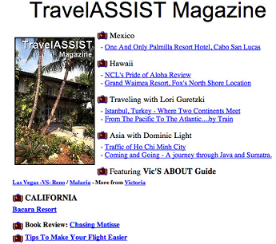
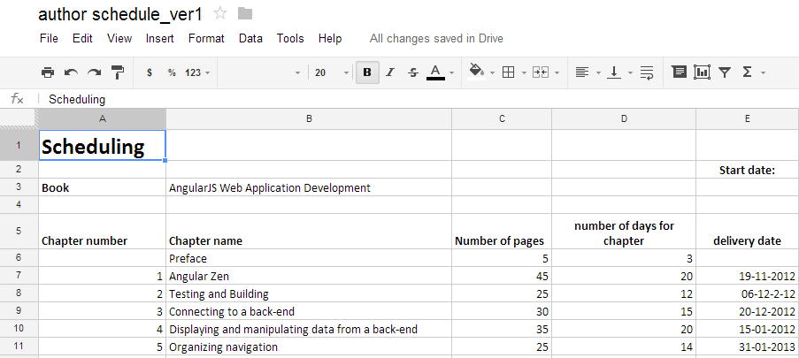

Building SPAs with AngularJS
Intermediate and advanced topics
My name is Pawel Kozlowski
I edit text files for living
I'm into climbing and open-source

AngularJS, angular-app, AngularUI, Karma runner, InteliJ live tpls, MongoLab wrappers...

Tell us more about yourself
- Your name
- Your experience with:
- JavaScript and web development in general
- AngularJS
- Unit testing and TDD
- Web applications where you want to use AngularJS
- Your expectations regarding this workshop
Organizational details
- 3 days, 09:00 ~ 17:00
- 1h lunch break
- 2 other breaks (15-30 min) during the day
- Please, switch off your mobile devices (if possible)
Please, do ask questions

- Short ones at any time
- A dedicated slot for more involved topics
- I'm here to address your concerns, not present my material
Tools and libraries
- Libraries:
- AngularJS
- Jasmine - BDD testing framework
- moment.js - date / time manipulation helper
- Bootstrap CSS - so things look decent
- Tools:
- node.js / npm to run build and examples
- Gulp.js as the stream-based build tool
- Karma-runner as a in-browser test runner
- AngularJS Batarang Chrome extension
Exercises and this presentation
https://github.com/pkozlowski-opensource/js-with-ng-advancedWorking on exercises
- All exercises are in the /exercises folder
- You usually need to "fill in blanks"
- A solution is always provided in the "solution" subfolder
- Useful commands:
gulp www- start built-in web servergulp test- run testsgulp tdd- run tests on each code change
- I highly encourage you to pair-program during exercises
Meet AngularJS
AngularJS framework
- Complete solution for in-browser web applications
- Created and maintained by Google
- Open source, many contributors from outside of Google
- Started over 4 years ago, exploding popularity
- Revolutionary in several aspects
- Strong focus on testability
Be ready to rewrite your brain!
I hereby declare AngularJS to be MVW framework - Model-View-Whatever. Where Whatever stands for "whatever works for you".
Igor Minar
and doubt from time to time...

Hello, {{name}}!
<!DOCTYPE html>
<html ng-app>
<head>
<script src="/lib/angular.js"></script>
</head>
<body>
<h1>Hello, {{user.name}}!</h1>
<input type="text" ng-model="user.name"/>
</body>
</html>
Bits and pieces
AngularJS rendering engine
From static web to... web applications!
|  |  |
From declarative HTML to...
|
|
We need a superheroic framework!

But we've got jQuery!
- Remedy for the DOM insanity
- Focused on DOM querying and manipulation
- The programming model didn't fundamentally change...
$(function(){
$('#greeting').text('Hello World!');
});
We need better abstractions
"Angular is what the web browser would have been, had it been designed for applications"
Miško Hevery
Hello {{name}}!Live coding!
To see some of AngularJS concepts in action.
It is not string-based template!
String-based templates
|
AngularJS
|
Rendering engine - takeaways
- Automatic refresh, no need to say "render"
- Declarative UI driven by model
- Model is just plain JavaScript
Exercise
Make the user-management page live.
Introduction to JavaScript testing with Jasmine

Jasmine
http://jasmine.github.io/- JavaScript testing framework
- BDD roots visible in its syntax
- Build-in mocking capabilities
- Build-in matchers
Anatomy of a Jasmine test
describe('users controller', function () {
var $scope;
beforeEach(inject(function ($rootScope, $controller) {
$scope = $rootScope;
$controller('UsersCtrl', {
'$scope': $scope
});
}));
it('should initialize scope with an empty users collection', function () {
expect($scope.user).toEqual({});
expect($scope.users.length).toEqual(0);
});
it('should save a current user and update users list', function () {
$scope.user = {name : 'foo'};
$scope.save();
expect($scope.users.length).toEqual(1);
expect($scope.user).toEqual({});
});Let's see some more code...
Testing controllers
- Use
$controllerservice to create instances of controllers - Our goal is to test methods on scope set-up be a controller
Working on code during exercises
- Include only relevant files in the Karma config (inside gulpfile.js)
gulp testorgulp tdd(recommended)- Use
ddescribe/iitto execute a subset of tests - Put the
debugger;statement to debug code
Exercise
Finish Jasmine tests for a simple users controller.
Modules and Dependency Injection
"I was expecting a paradigm shift, and all I got was a lousy constructor"
A bit of theory
$provideallows us to register recipes for object creation- "Recipes" are grouped into modules
$injectorgives access to singletons produced based on those recipes- Singleton instances are called "services"
We need a module first
angular.module('app', []);
DI in AngularJS accepts various recipes
- Values
- Services
- Factories
Values
angular.module('app', []).value('userstorage', new UserStorage());Services
angular.module('app', []).service('userstorage', UserStorage);Factoriess
angular.module('app', []).service('factory', function(){
return new UserStorage();
// or simply define it here
});In reality things are a bit more complex...
2-phase lifecycle
- Configure
- Run
Modules accept various recipes
- Values
- Services
- Factories
- Constants
- Providers
Constants
angular.module('userstorage', [])
.constant('SEQUENCE_START', 1)
.factory('UserStorage', function(SEQUENCE_START) {
// I can configure my service based on the constant
var sequence = 1;
// AngularJS services are singletons
var UserStorage = {};
...
return UserStorage;
});
// I can re-define a constant closer to my application module
angular.module('app', ['userstorage']).constant('SEQUENCE_START', 10);Providers
angular.module('userstorage', [])
.provider('UserStorage', function() {
var settings = {
seqStart: 1
};
return {
setSequenceStart: function(seqStart) {
settings.seqStart = seqStart;
},
$get: function() {
var UserStorage = {};
...
return UserStorage;
}
}
});
// I can configure a provider before it gets instantiated
angular.module('app', ['userstorage'], function(userstorageProvider) {
userstorageProvider.setSequenceStart(10);
});Modules can depend on other modules
angular.module('app', ['userManagement', 'commonHelpers'])
Modules do not _not_ form namespaces!
angular.module('app', ['foo', 'bar']);
angular.module('foo', []).service('myService', FooService);
angular.module('bar', []).service('myService', BarService);But they do prevent pollution of the global JS namespace.
Registering controllers on modules
DI under the hood
angular.module('users', [])
.controller('UsersCtrl', function ($scope, UserStorage) {
AngularJS modules and testing
beforeEach(module('users'));
// let's load real dependencies so those are called if not mocked
beforeEach(module('userstorage'));
beforeEach(inject(function (_$rootScope_, _$controller_, _UserStorage_) {
$scope = _$rootScope_;
// now it should be more obvious why we use underscores
$controller = _$controller_;
userStorage = _UserStorage_;
}));Loading modules on demand
The bitter truth is that it is not supported...
Exercise
Turn code from the previous exercise into its modular equivalent.
Check tests to see various mocking / spying techniques.
Make the tests pass.
More on the rendering engine
Filters

Filters
{{user.birthDate | date:'YYYY-MM-dd'}}
{{date(user.birthDate, 'YYYY-MM-dd')}}
- Global UI formatting / transforming functions
- Built-in filters: formatting and arrays filtering
- Very easy to unit-test
Formatting filters
<td>{{user.birthDate | date:'yyyy-MM-dd'}}</td>Examples of built-in formatting filters:
- currency
- date
- json
- lowercase, uppercase
- number
Filtering filters
<tr ng-repeat="user in users | filter:filterCriteria | limitTo:20">
<td>{{user.id}}</td>
<td>{{user.login}}</td>
<td>{{user.name}}</td>Examples of built-in formatting filters:
- filter
- limitTo
- orderBy
Filters best practices
- UI-focused transforming functions
- Small, fast, synchronous
- No side effects
- Idempotent
- Model-focused, no DOM manipulation
Using filters from JavaScript code
angular.module('myDate', [])
.filter('myDate', function (dateFilter, $filter) {
return function (inputDate) {
return dateFilter(inputDate, 'YYYY-MM-dd');
//return $filter('date')(inputDate, 'YYYY-MM-dd');
};
});
Exercise
Write a pagination filter, similar to the limitTo one,
that allows limiting an array to both boundaries.
Write unit tests and code for this filter using TDD.
{{ users | pagination:pageNo:10}}"limitTo filter should have a left and right bound"
Working with forms

Form controls available out of the box
- Various types of inputs (text, number, date etc.)
- Textarea
- select
Validation: ingredients
- We need a form element
- A form needs a name
- Each input needs a name as well
Why do we need all those names?
<form name="editform">
<div class="form-group">
<label for="id">Id: </label>
<input type="text" value="{{user.id || 'A new user'}}" readonly id="id" class="form-control"/>
</div>
<div class="form-group has-feedback" ng-class="{'has-success': editform.login.$valid, 'has-error': editform.login.$invalid}">
<label for="login">Login: </label>
<input name="login" type="text" ng-model="user.login" id="login" class="form-control" ng-required="true" ng-minlength="8"/>
<span class="glyphicon form-control-feedback" ng-class="{'glyphicon-ok': editform.login.$valid}"></span>
</div>Validation states
- $valid / $invalid
- $error
- $pristine / $dirty
Those states are both reflected in JS as well as in HTML
$valid / $invalid
$error
Login name is required
Login name must be at least 8 characters $pristine / $dirty
<div ng-if="editform.$invalid && editform.$dirty">
<p>Please correct validation errors:</p>
<ul>
<li ng-if="editform.login.$error.required">Login name is required</li>
<li ng-if="editform.login.$error.minlength">Login name must be at least 8 characters</li>
<li ng-if="editform.name.$error.required">User name is required</li>
<li ng-if="editform.birthdate.$error.required">Birth date is required</li>
</ul>
</div>ngForm
HTML doesn't allow us to nest form elements
- Grouping controls for validation
- Work-around for a "dynamic name" problem
Known limitations and pitfalls
- "Dynamic names" and validation
- Autofill doesn't update ngModel
- "Clashes" with new HTML5 input types (number, date etc.)
Exercise
Add validation to the edit form.
Use any visual feedback for error reporting.
ngAnimate

Animations
- Movement illusion - cheating on the human eye
- We need to display movement phases frame-by-frame
- 3 main methods of doing "animations" in a browser
- Constructing frames via JavaScript
- CSS transitions
- CSS animations
JavaScript animations
Fade me!
Out | In .controller('FadeJSCtrl', function ($scope) {
var elToFade = document.getElementById('fadeJS');
function changeOpacity(opacity, step, stop) {
elToFade.style.opacity = opacity;
if (!stop(opacity)) {
setTimeout(function() {
changeOpacity(opacity - step, step, stop);
}, 16);
}
}
$scope.fadeOut = function () {
changeOpacity(1, 0.01, function(newOpacity){
return newOpacity <= 0;
});
};CSS transitions
Fade me!
Out | In .controller('FadeCssCtrl', function ($scope) {
var elToFade = angular.element(document.getElementById('fadeCss'));
$scope.toggle = function () {
elToFade.toggleClass('active')
};
}).fade {
opacity: 1;
transition: 1.5s linear all;
}
.fade.active {
opacity: 0;
}Back to the declarative World
Fade me!
Out | InFade me!
.controller('FadeNgAnimateCtrl', function ($scope) {
$scope.toggleActive = false;
$scope.toggle = function () {
$scope.toggleActive = !$scope.toggleActive;
};
}).fade {
opacity: 1;
transition: 1.5s linear all;
}
.fade.active {
opacity: 0;
}Not only ngClass
- We can do some animations using
ngClass - More complex animations require hooks for the DOM element add / remove
ngAnimate - declarative animations
- A separate file -
angular-animate.js - A separate module -
ngModule - Supports CSS transitions / animations as well as JS animations
- All the animations are CSS class-based
angular.module('app', ['ngAnimate', 'users', 'userstorage']);ngAnimate and CSS3 transitions
<tr ng-repeat="user in users" class="fade">.fade {
box-sizing:border-box;
}
.fade.ng-enter,
.fade.ng-leave {
transition: all linear 1.5s;
}
.fade.ng-leave.ng-leave-active,
.fade.ng-enter {
opacity: 0;
}
.fade.ng-leave,
.fade.ng-enter.ng-enter-active {
opacity: 1;
}
Animations can be re-used
<div ng-if="showDetails" class="fade">...</div>Exercise
Add CSS3-transition based animations ot the users' list.
AngularJS rendering internals